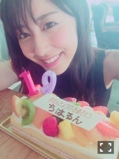
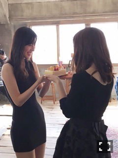

| 2016/02 17 Wed | 19歳に、なりました ！(´>∀<｀)ゝ |
ちはるーむへようこそ\( ˆoˆ )/

斎藤ちはる、2月17日で19歳になりましたー！(﹡ˆ ˆ﹡)
いつも応援ありがとうございます♪
支えになってます。
中3の14歳の時に乃木坂に入って、
もう大1も終わろうとし、ついに19歳...。
感慨深いものがあります。
十代最後ということで、19歳という年齢が1番
子供と大人の境目だと思うんです。
まだ大人じゃないけど、もう子供じゃない。
そんなあやふやな年齢だけど
心はしっかりしていかないといけない。
19歳の目標は
「精神面的に大人になる！！」
自分自身に置かれた状況の判断や
仕事に対しての関わり方、
人に迷惑をかけず自分で身の回りの管理をし、
弱音を吐きすぎず溜め込みすぎず。
自立した大人になります。
1人のかっこいい女性として
胸を張って生きていきたい。
2016年の目標を年始にたくさん掲げたので
19歳の年は今までとは一味違った、
いい意味で刺激的な1年にしていきます！
「〜したい」じゃなくて「〜にする」と断言するのはわたしのモットーです。
そうすると叶うと信じてる！
19歳、十代最後の歳。
後悔だけはしたくない！
今年こそ自分に素直に生きていきます。
これからもよろしくお願いしますm(_ _)m！
今日、18歳最後の撮影は
3月9日発売のBOMBさんでした！
その撮影終わりに...優里が...！！

ハッピーバースデー♡ってケーキをプレゼントしてくれたの(﹡ˆ ˆ﹡)
嬉しすぎて満面の笑み。。

じゃん。
嬉しかった...ヽ(；；)丿
ケーキも美味しかった♡
そしてそして本日2/17 24:00〜24:30
bayfm「まいちゅんカフェ」にゲスト出演しました！
まいちゅんも驚いてたくらいの
私の新しい一面も垣間みえるかと思いますので
皆さん聴いてみてね\( ˆoˆ )/
19歳、素敵な1年になるよう
たくさん努力し、頑張ります！\( ˆ ˆ )/
斎藤ちはる
コメント(1341)
2016/02/17 00:00